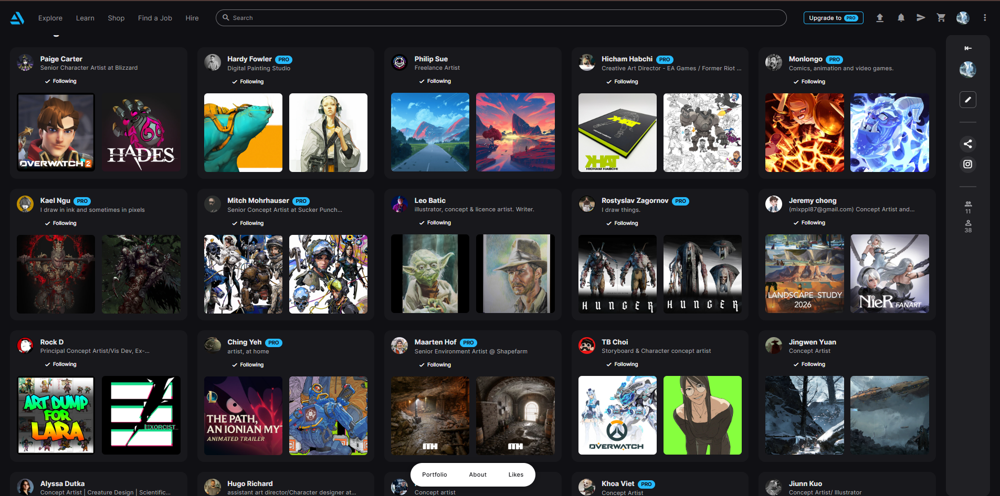
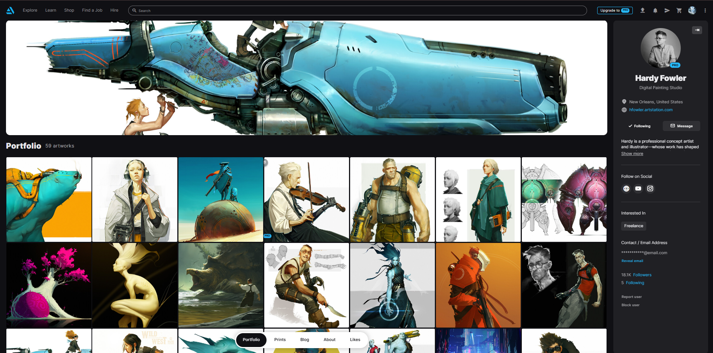
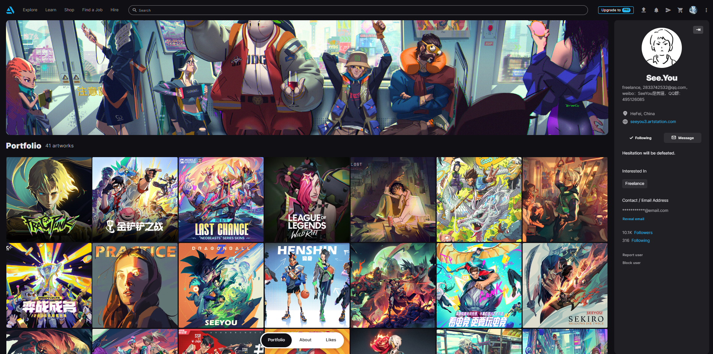
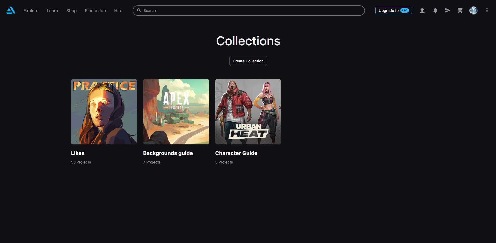
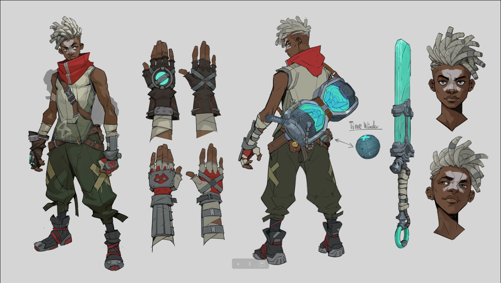
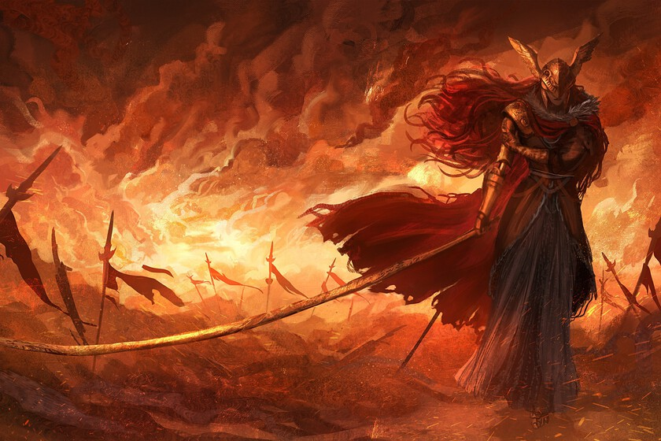
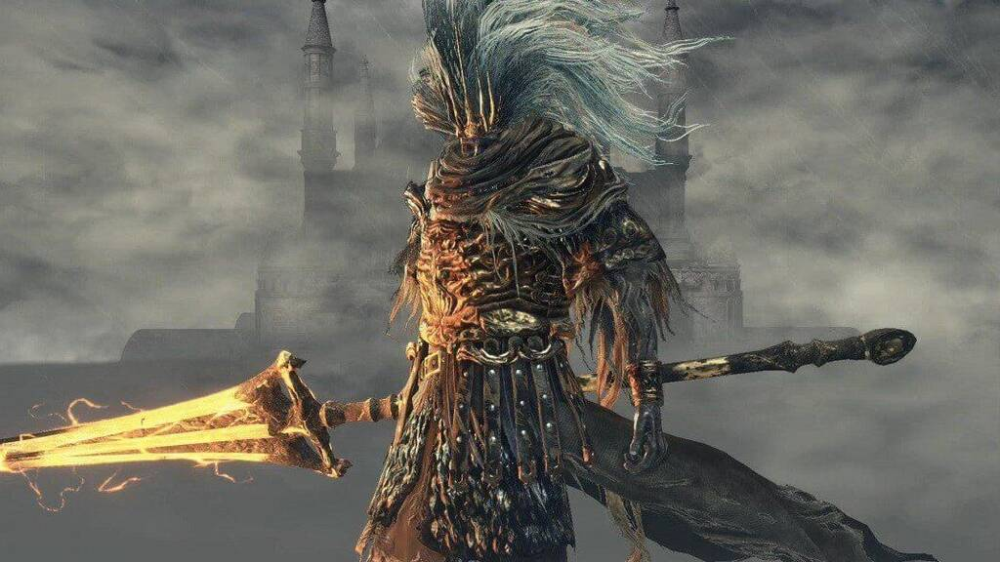
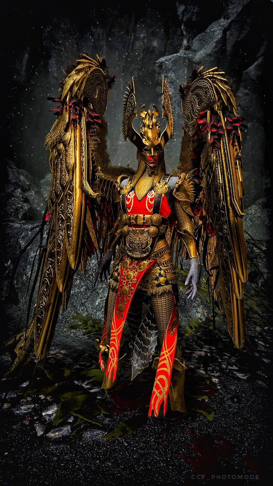

1. Micro-obsesiones: Análisis de ilustración digital
Puedo pasar horas navegando en portafolios y redes guardando publicaciones de artistas digitales. No lo hago solo por entretenimiento, sino para entender sus técnicas: analizo cómo resuelven la luz, el flujo de línea y la teoría del color para aplicarlo y mejorar mi propio trazo.

Como decía el famoso ilustrador y dibujante de cómics Kirby:
"La inspiración existe, pero tiene que encontrarte trabajando y observando detenidamente el entorno."
— Consulta de referencias en ArtStation Community.
Artistas de referencia indispensables
Tres exponentes cuyo trabajo de diseño de personajes y concepto analizo constantemente:



Ver ficha técnica de mi proceso de estudio
- Plataformas principales: ArtStation, Pinterest y Behance.
- Especialidad analizada: Ilustración conceptual y diseño de personajes.
- Frecuencia de archivo: .
2. Colecciones Intangibles: Mi galería de likes y referencias
Un inventario comentado de la colección visual que voy construyendo a diario al guardar y dar like a obras de otros ilustradores en plataformas como ArtStation y Pinterest:
-
Galería de elementos técnicos guardados:
- Estudios de iluminación dramática y claroscuro.
- Pinceles digitales personalizados y muestras de textura.
-
Estructura de carpetas de referencia:
- Diseño de personajes y vestuario conceptual.
- Fondos, perspectiva y composición de escenarios.


Ver datos de la colección
Actualmente cuento con más de 300 ilustraciones guardadas en mis marcadores, clasificadas desde el .
3. Ranking: Top 3 de jefes más difíciles en videojuegos
Una clasificación argumentada sobre los enfrentamientos que más horas de intento, paciencia y memorización de patrones me exigieron para poder superar:
-
Puesto #1: Malenia, Espada de Miquella (Elden Ring)
Un combate implacable donde cada golpe recibido le cura vida a ella, sumado a su ataque Danza de las Espadas (Waterfowl Dance) que requiere una precisión de esquiva casi perfecta.

Figura 7: Malenia en el combate final del Árbol Hierático. -
Puesto #2: El Rey Sin Nombre / Nameless King (Dark Souls III)
Un desafío doble: primero luchar contra la cámara en la fase del dragón, y luego un duelo mano a mano con ataques retrasados diseñados específicamente para castigar el rodar a tiempo.

Figura 8: El Rey Sin Nombre en el Pico del Archidragón. -
Puesto #3: Sigrun, la Reina Valquiria (God of War)
El reto opcional definitivo: combina absolutamente todos los ataques y patrones de las demás valquirias, con una barra de salud gigante y agarres aéreos que te eliminan si fallás el timing por un milisegundo.

Figura 9: Sigrun en el consejo de las Valquirias.
Podés consultar más detalles sobre las mecánicas y estrategias de estos enfrentamientos en la guía de Fextralife Wiki.